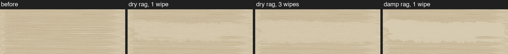
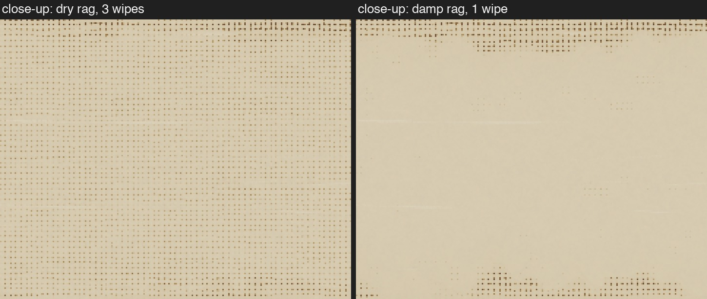
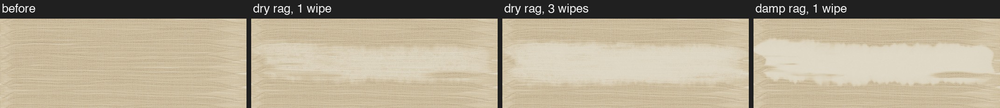
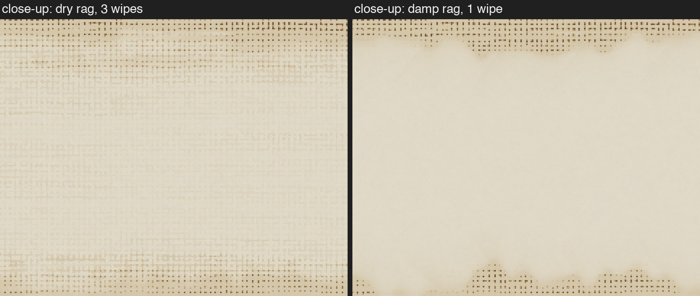
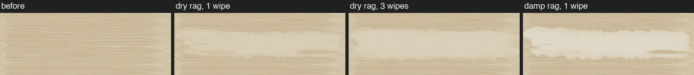
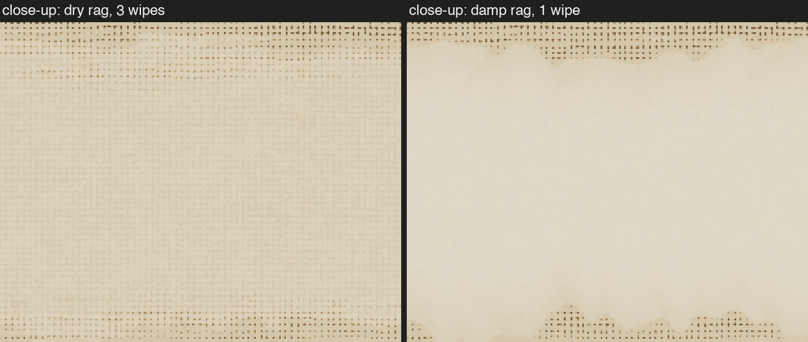
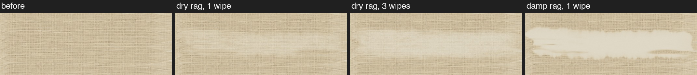
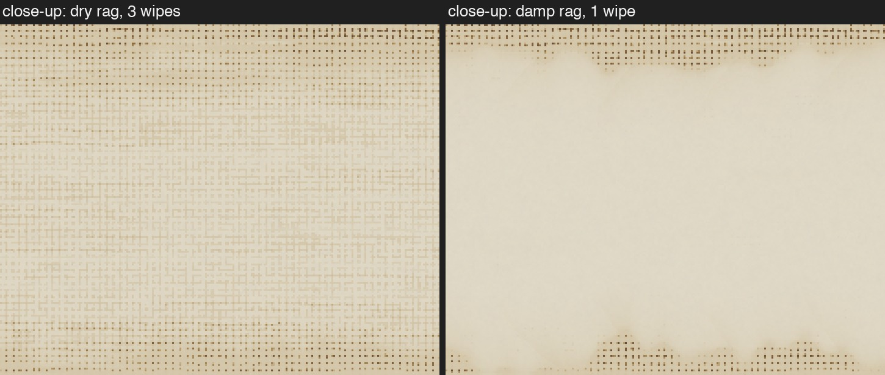

A thin brown wash (raw umber, thinned half with spirits) is brushed over the canvas. Then a rag is dragged once across the middle, left to right. Everything is the same in all four versions except one rule: how hard it is for the rag to get the last bit of paint off.
Each row shows: the wash before, after one wipe with a dry rag, after three wipes with a dry rag, and after one wipe with a rag dipped in spirits.
• A dry rag lifts most of a thin wash but leaves a pale tint. Wiping again makes it a bit lighter.
• A rag dampened with spirits takes it much closer to the bare canvas.
• It should look like cloth on paint: soft, a bit uneven, not a flat cut-out.
So the question for each version: does it look like that?
The rag can never get below a set thickness of paint, dry or damp. Spirits don't help.


Whatever the cloth touches, it takes its share of, however thin. The only stain left is where the cloth missed.


The canvas surface holds on to a thin layer. A dry rag can't touch that layer; a damp rag can.


No hard limit. The thinner the paint gets, the slower it comes off, so a dry rag leaves a tint that fades with more wiping. Spirits make the last bit come off much more easily.


Settings: 2400 px canvas, 440 mm wide, linen, rag about 44 mm wide, pressure 0.8. Versions 3 and 4 use guessed numbers (0.5 µm and 1 µm); they can be tuned. Technical page with all numbers · round 2 (damp).